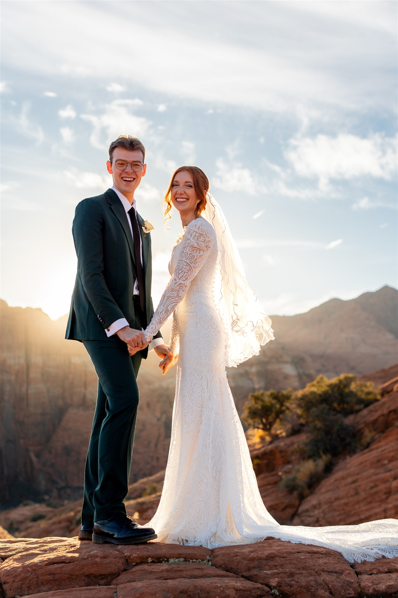
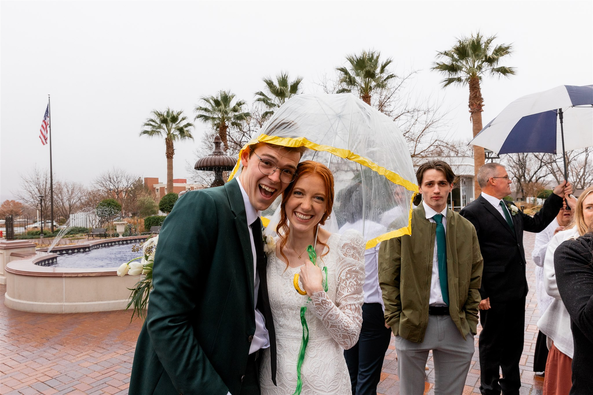

AJ and Adelle met in an acting class at BYU fall 2020. It was their freshman year, and both thought they would be majoring in acting or musical theatre. Adelle was smitten at first glance, but quickly understood that AJ was not interested, and instead decided to try to become good friends. This included getting to know many of AJ's friends in an endeavor endearingly called "infiltrating the friend group." Friendships ensued, but no romance was formed, and the semester ended uneventfully.
After winter break, Adelle decide to try and move on by going on Mutual dates, but a good friend started asking questions when she noticed how great the two got along. When she realized what was going on she took it upon herself to talk with AJ and see where he stood. That conversation was a catalyst for their relationship.
With eyes now open the two began to spend a lot more time one-on-one, eventually resulting in a sweet Valentine's Day first kiss, and a late-night DTR a few days later. The rest of the semester flew by. They turned in their mission papers together, and received calls on the same day. They decided to stay at school one extra term, and started talking about the future.
A few of Adelle's work endeavors took their relationship long distance, and although it was hard it showed them that it was possible and worth it. They decided to write each other on their missions, and they kept in contact every week without fail. When AJ finally came home they took a group trip to St. George to see each other in person, and they just couldn't wait for school to start to see each other again, so Adelle flew down to Arizona a little later to help AJ move to Provo.
Once they were both in Provo planning took off at a rapid pace. They started telling family and friends, took another trip to St. George to scope it out for the wedding, and enjoyed preparing to get married. They got engaged in September, found housing in October, and the rest is about to be history!
